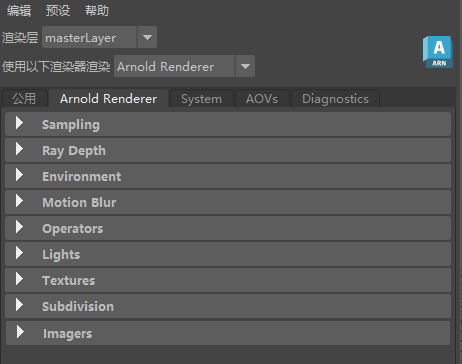

| 延伸阅读 |
|---|
| 请参见《Arnold 用户手册》中的渲染设置 |
| 《Arnold for Maya 用户手册》介绍了如何在 Maya 用户界面中使用 Arnold 渲染设置。《Arnold 用户手册》提供了有关全局 Arnold 渲染设置的完整文档。 |
如果 Arnold 是 Maya 中当前选定的渲染器，则通过“渲染设置”(Render Settings)对话框可访问 Arnold 设置。
这些是全局设置，用于控制整个场景中的 Arnold 渲染行为（此外还有每对象设置，这些设置可通过属性编辑器访问）。
要访问全局渲染设置，请单击“显示渲染设置”(Display Render Settings)窗口图标，或选择“窗口 > 渲染编辑器 > 渲染设置”(Window > Rendering Editors > Render Settings)。
这时将显示以下对话框：

第一个选项卡（“公用”(Common)）可以访问输出驱动程序，以便将 Arnold 渲染输出写出为 EXR、PNG、JPEG 等文件。第二个选项卡（“Arnold 渲染器”(Arnold Renderer)）可以访问控制渲染质量、灯光、运动模糊等内容的参数。这些参数分为若干组。第四个选项卡（“AOV”(AOVs)）用来控制任意输出变量（通道）。
“渲染设置”(Render Settings)窗口右上角还有一个图标，用于指示是否有新的更新可用。